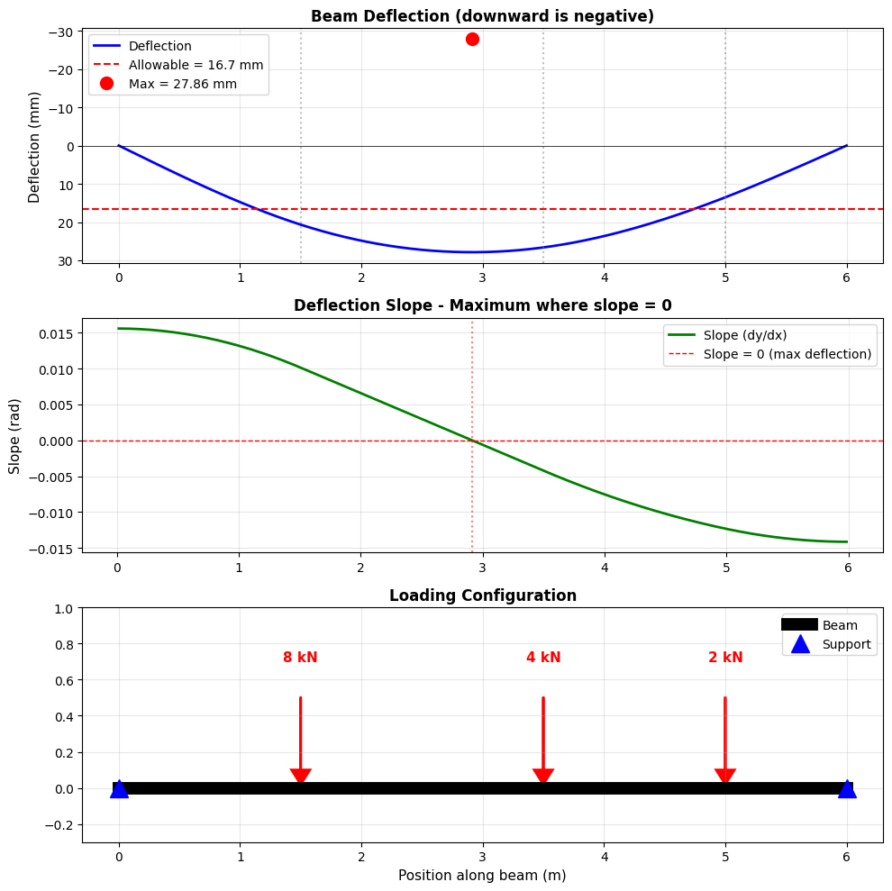

Beam Deflection Analysis - Theory and Derivations#
1. The Physical Problem#
We have a simply supported beam (supported at both ends, free to rotate) with point loads applied at various locations. We want to find:
How much the beam deflects (bends downward)
Where the maximum deflection occurs
Whether it exceeds allowable limits
2. Deflection Formula for a Point Load#
2.1 The Equation#
For a simply supported beam of length \(L\) with a point load \(P\) at distance \(a\) from the left support, the deflection at any position \(x\) is:
For \(x \leq a\) (before the load):
For \(x > a\) (after the load):
Where:
\(y(x)\) = deflection at position \(x\) (negative means downward)
\(P\) = point load magnitude (N or kN)
\(a\) = distance of load from left support (m)
\(b = L - a\) = distance of load from right support (m)
\(L\) = total beam length (m)
\(E\) = Young’s modulus (material stiffness, Pa)
\(I\) = moment of inertia (beam cross-section property, m⁴)
2.2 Physical Meaning#
The equation tells us:
Deflection is proportional to load \(P\) (double the load → double the deflection)
Deflection is inversely proportional to stiffness \(EI\) (stiffer beam → less deflection)
Deflection depends on where you measure (\(x\)) and where the load is (\(a\))
Maximum deflection is NOT necessarily at midspan if load is off-center
2.3 Derivation Overview (Optional)#
This formula comes from solving the beam bending equation:
Where \(w(x)\) is the distributed load. For a point load, we integrate this equation four times with appropriate boundary conditions:
At supports: \(y(0) = 0\) and \(y(L) = 0\) (no deflection)
At supports: \(M(0) = 0\) and \(M(L) = 0\) (no moment, free rotation)
The derivation involves calculus (integration) but results in the closed-form equations above.
3. Principle of Superposition#
3.1 The Concept#
Superposition Principle: For linear elastic systems, the total deflection from multiple loads is the sum of deflections from each load acting individually.
3.2 Why It Works#
The beam equation is linear in deflection \(y\):
No \(y^2\) or \(y^3\) terms
No products like \(y \cdot y'\)
Just \(y\) and its derivatives
This linearity means:
If load \(P_1\) causes deflection \(y_1\)
And load \(P_2\) causes deflection \(y_2\)
Then loads \(P_1 + P_2\) cause deflection \(y_1 + y_2\)
3.3 Example#
For two loads:
Load 1: \(P_1 = 5\) kN at \(a_1 = 1.5\) m
Load 2: \(P_2 = 8\) kN at \(a_2 = 4.0\) m
At position \(x = 3.0\) m:
y_total(3.0) = y_from_load1(3.0) + y_from_load2(3.0)
We calculate each deflection separately using the formula, then add them!
3.4 Practical Implementation#
# Initialize deflection
deflections = [0.0] * n_points
# Add contribution from each load
for position_x in x_positions:
for load_pos, load_mag in loads:
deflection_from_this_load = formula(position_x, load_pos, load_mag, ...)
deflections[i] += deflection_from_this_load
4. Finding Maximum Deflection Using Finite Differences#
4.1 The Problem#
We have deflection values at discrete points: \(y_0, y_1, y_2, ..., y_n\)
We need to find where deflection is maximum. At maximum, the slope must be zero:
4.2 Finite Difference Approximation of Derivatives#
Calculus Definition of derivative:
Finite Difference Approximation (for small but finite \(\Delta x\)):
This is called the forward difference formula.
4.3 Types of Finite Differences#
Forward Difference (uses points ahead): $\(\frac{dy}{dx}\bigg|_i \approx \frac{y_{i+1} - y_i}{\Delta x}\)$
Backward Difference (uses points behind): $\(\frac{dy}{dx}\bigg|_i \approx \frac{y_i - y_{i-1}}{\Delta x}\)$
Central Difference (more accurate, uses both): $\(\frac{dy}{dx}\bigg|_i \approx \frac{y_{i+1} - y_{i-1}}{2\Delta x}\)$
4.4 Visual Understanding#
y[i+1]
●
/
/ ← slope ≈ (y[i+1] - y[i])/Δx
/
●
y[i]
If we have many points close together, this approximation becomes very accurate!
4.5 Finding the Maximum#
At maximum deflection, slope changes from negative to positive (for downward deflection):
Before max: slope < 0 (going down)
At max: slope ≈ 0 (flat, turning point)
After max: slope > 0 (going up)
Algorithm:
Calculate slope at each point using finite differences
Find where slope is closest to zero
That’s where maximum deflection occurs!
slopes = []
for i in range(len(deflections) - 1):
dx = x_positions[i+1] - x_positions[i]
slope = (deflections[i+1] - deflections[i]) / dx
slopes.append(slope)
# Find point with minimum slope magnitude (closest to zero)
# Or simply find minimum deflection value
max_deflection_index = deflections.index(min(deflections))
4.6 Why Not Just Find Minimum Value?#
You’re right - we can! For deflection curves, finding min(deflections) gives the maximum downward deflection.
But computing the slope teaches us:
How finite differences work (foundation for numerical methods)
Visualizing where slope = 0 confirms the maximum location
Later problems (stress analysis, vibrations) need derivatives explicitly
4.7 Accuracy Considerations#
Finite difference accuracy depends on step size \(\Delta x\):
Smaller \(\Delta x\) → more accurate
But too small → rounding errors
Typical: 50-200 points along beam length
Error in finite difference: $\(\text{Error} = O(\Delta x) \text{ for forward/backward}\)\( \)\(\text{Error} = O(\Delta x^2) \text{ for central difference}\)$
This means halving \(\Delta x\) reduces error by ~2× (forward) or ~4× (central).
5. Serviceability Check (L/360 Criterion)#
5.1 Building Code Requirement#
Maximum deflection should not exceed:
This is a serviceability limit to prevent:
Visible sagging
Cracking of finishes (plaster, tiles)
User discomfort
Vibration issues
5.2 Example#
For \(L = 6\) m: $\(\delta_{allowable} = \frac{6000 \text{ mm}}{360} = 16.67 \text{ mm}\)$
If calculated deflection = 6.34 mm < 16.67 mm → PASS ✓
6. Why Asymmetric Loads Create Off-Center Deflection#
6.1 Symmetry Argument#
Symmetric case (equal loads at equal distances from center):
Load at 2m: 5 kN
Load at 4m: 5 kN (6m beam)
Maximum deflection at center (3m) by symmetry
Asymmetric case (unequal loads or positions):
Load at 1.5m: 5 kN
Load at 4.0m: 8 kN
Heavier load “pulls” maximum toward itself
Maximum at ~3.15m (closer to the 8 kN load)
6.2 Influence Lines#
Each load creates a deflection “shape.” The total shape is the sum. The 8 kN load at 4.0m creates a larger deflection contribution that shifts the peak rightward.
7. Data Structures in the Code#
7.1 Why Different Types?#
Tuples for loads: (1.5, 5000)
Immutable: Load position and magnitude don’t change
Paired data: Always position + magnitude together
Access:
loads[0][0]= position,loads[0][1]= magnitude
Dictionary for beam: {'L': 6.0, 'E': 200e9, 'I': 8.33e-6}
Named access:
beam['L']is clearer thanbeam[0]Self-documenting: Know what each value means
Flexible: Easy to add properties later
Lists for computation: deflections = [0.0] * n
Mutable: Need to update values during calculation
Indexed: Access by position
deflections[i]Dynamic: Can compute, modify, extend
8. Summary#
Key Equations:
Point load deflection: \(y(x) = \frac{Pbx}{6LEI}(L^2 - b^2 - x^2)\) for \(x \leq a\)
Superposition: \(y_{total} = \sum y_i\)
Finite difference: \(\frac{dy}{dx} \approx \frac{y_{i+1} - y_i}{\Delta x}\)
Serviceability: \(\delta_{max} \leq \frac{L}{360}\)
Key Concepts:
Superposition: Add deflections from each load independently
Finite differences: Approximate derivatives using nearby points
Maximum location: Where slope = 0 (or find minimum deflection directly)
Data structures: Use appropriate types for different purposes
Engineering Reality: This is how real structural engineers analyze beams! More complex cases use finite element software, but the principles (superposition, deflection limits) remain the same.
import matplotlib.pyplot as plt
# BEAM PROPERTIES (dictionary)
beam = {
'L': 6.0, # length (m)
'E': 200e9, # Young's modulus (Pa)
'I': 8.33e-6, # moment of inertia (m^4)
}
# POINT LOADS (tuples: position and magnitude)
loads = (
(1.5, 8000), # 5 kN at 1.5m (HVAC unit)
(3.5, 4000), # 8 kN at 4.0m (equipment)
(5, 2000),
)
# CALCULATE DEFLECTION using beam formula (superposition)
def deflection_point_load(x, P, a, L, E, I):
"""Deflection at x due to point load P at position a"""
b = L - a
if x <= a:
return (P * b * x / (6 * L * E * I)) * (L**2 - b**2 - x**2)
else:
return (P * a * (L - x) / (6 * L * E * I)) * (L**2 - a**2 - (L - x)**2)
# CREATE POSITION LIST and compute deflections
n_points = 201
x_positions = [i * beam['L'] / (n_points - 1) for i in range(n_points)]
deflections = [0.0] * n_points # initialize list
# Add deflection from each load (superposition)
for i, x in enumerate(x_positions):
for load_pos, load_mag in loads:
deflections[i] += deflection_point_load(x, load_mag, load_pos,
beam['L'], beam['E'], beam['I'])
# FIND MAXIMUM using finite difference derivative
# dy/dx ≈ (y[i+1] - y[i]) / dx
slopes = []
for i in range(len(deflections) - 1):
dx = x_positions[i+1] - x_positions[i]
slope = (deflections[i+1] - deflections[i]) / dx
slopes.append(slope)
# Find where slope changes from negative to positive (minimum deflection = max downward)
max_deflection = 0
max_location = 0
for i in range(len(deflections)):
if abs(deflections[i]) > max_deflection:
max_deflection = abs(deflections[i])
max_location = x_positions[i]
# RESULTS dictionary
results = {
'max_deflection_mm': max_deflection * 1000,
'max_location_m': max_location,
'allowable_mm': beam['L'] / 360 * 1000,
'status': 'PASS' if max_deflection < beam['L']/360 else 'FAIL'
}
# PLOT RESULTS
fig, (ax1, ax2, ax3) = plt.subplots(3, 1, figsize=(10, 10))
# 1. DEFLECTION DIAGRAM
y_mm = [y * 1000 for y in deflections] # convert to mm
ax1.plot(x_positions, y_mm, 'b-', linewidth=2, label='Deflection')
ax1.axhline(0, color='k', linewidth=0.5)
ax1.axhline(results['allowable_mm'], color='r', linestyle='--',
label=f'Allowable = {results["allowable_mm"]:.1f} mm')
ax1.plot(max_location, -max_deflection*1000, 'ro', markersize=10,
label=f'Max = {results["max_deflection_mm"]:.2f} mm')
for pos, load in loads:
ax1.axvline(pos, color='gray', alpha=0.5, linestyle=':')
ax1.set_ylabel('Deflection (mm)', fontsize=11)
ax1.set_title('Beam Deflection (downward is negative)', fontsize=12, fontweight='bold')
ax1.legend()
ax1.grid(True, alpha=0.3)
ax1.invert_yaxis()
# 2. SLOPE DIAGRAM (finite difference derivative)
x_slopes = [x_positions[i] + (x_positions[i+1] - x_positions[i])/2 for i in range(len(slopes))]
ax2.plot(x_slopes, slopes, 'g-', linewidth=2, label='Slope (dy/dx)')
ax2.axhline(0, color='r', linestyle='--', linewidth=1, label='Slope = 0 (max deflection)')
ax2.axvline(max_location, color='r', alpha=0.5, linestyle=':')
ax2.set_ylabel('Slope (rad)', fontsize=11)
ax2.set_title('Deflection Slope - Maximum where slope = 0', fontsize=12, fontweight='bold')
ax2.legend()
ax2.grid(True, alpha=0.3)
# 3. BEAM SCHEMATIC
ax3.plot([0, beam['L']], [0, 0], 'k-', linewidth=10, label='Beam')
ax3.plot(0, 0, '^', markersize=15, color='blue', label='Support')
ax3.plot(beam['L'], 0, '^', markersize=15, color='blue')
for pos, load in loads:
ax3.arrow(pos, 0.5, 0, -0.4, head_width=0.15, head_length=0.08,
fc='red', ec='red', linewidth=2)
ax3.text(pos, 0.7, f'{load/1000:.0f} kN', ha='center',
fontsize=11, fontweight='bold', color='red')
ax3.set_xlim(-0.3, beam['L'] + 0.3)
ax3.set_ylim(-0.3, 1)
ax3.set_xlabel('Position along beam (m)', fontsize=11)
ax3.set_title('Loading Configuration', fontsize=12, fontweight='bold')
ax3.legend()
ax3.grid(True, alpha=0.3)
plt.tight_layout()
plt.show()
